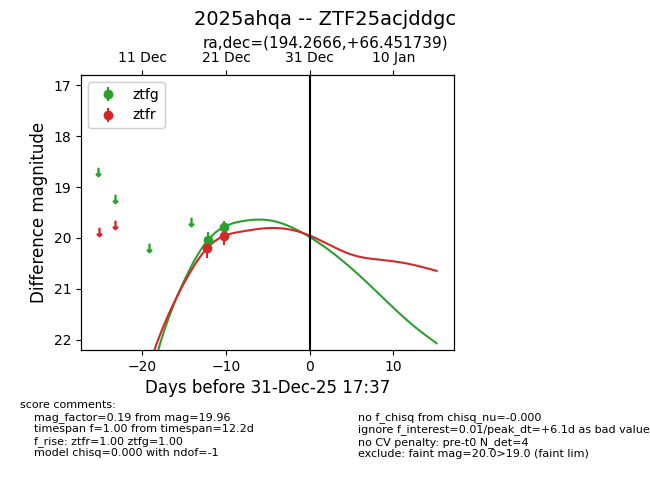
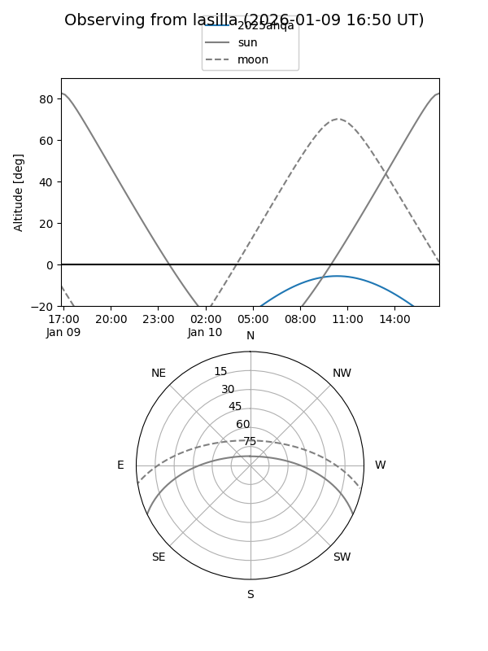
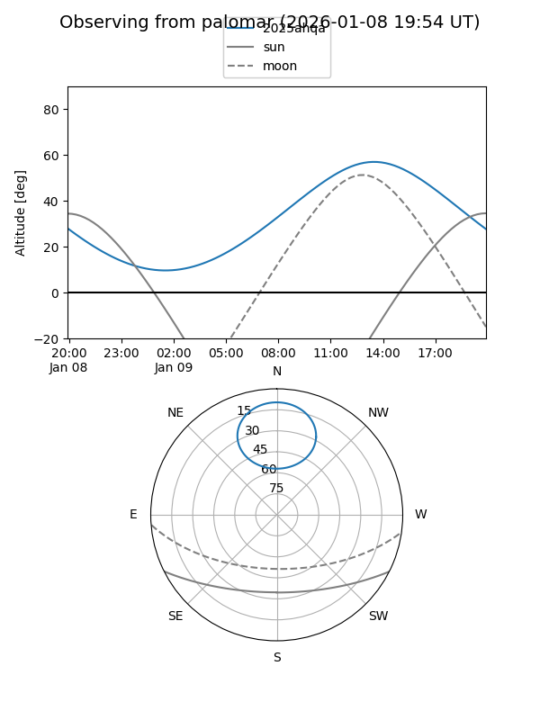
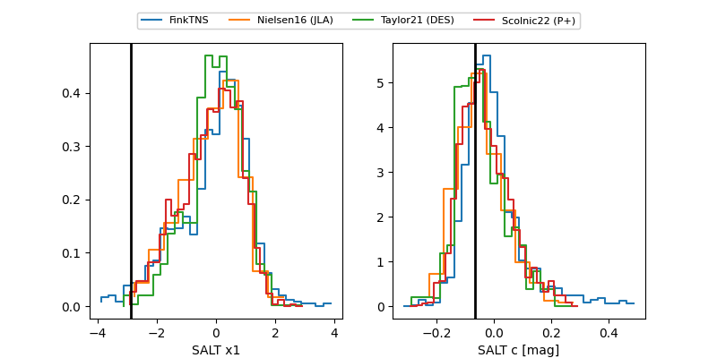

2025ahqa
Target 2025ahqa at 2025-12-20 00:02
Aliases and brokers:
FINK: fink-portal.org/ZTF25acjddgc
Lasair: lasair-ztf.lsst.ac.uk/objects/ZTF25acjddgc
ALeRCE: alerce.online/object/ZTF25acjddgc
TNS: wis-tns.org/object/2025ahqa
YSE: ziggy.ucolick.org/yse/transient_detail/2025ahqa
alt names
ZTF25acjddgc (ztf,fink_ztf)
2025ahqa (tns,yse)
Coordinates:
equatorial (ra, dec) = 194.2666,+66.45174
equatorial (HMS+DMS) = 12:57:03.98,+66:27:06.26
galactic (l, b) = (122.0450,+50.66682)
Flags:
Photometry:
last ztfg=20.05
1 ztfg detections
Lightcurve

Visibility


Additional plots
